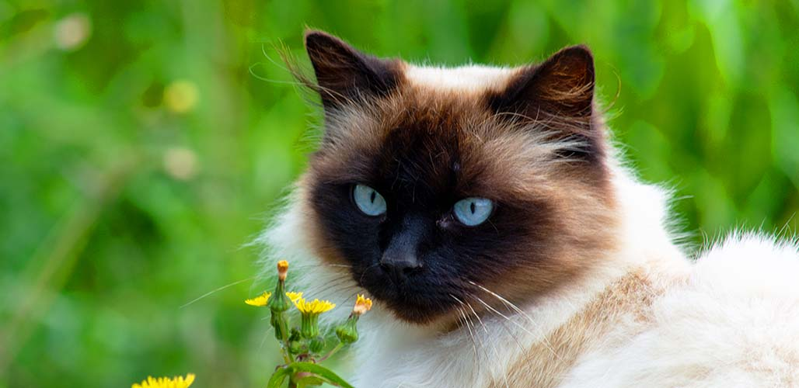

this is the catslovers world
Around 10,000 years ago, cats likely domesticated themselves when they started hanging around human settlements for better rodent-hunting opportunities. Now, there are an estimated 600 million domestic cats living around the world. Their cute toe beans, striped and spotted coats, and soft bellies still delight cat lovers everywhere.
There's a lot of science to learn about our feline friends — from why cats purr and knead, to why they make weird faces after smelling something and throw up all the time. Read more to uncover new knowledge about cat breeds, feline intelligence and the special bond between cats and humans.
5 FAST FACTS ABOUT CATS
Cats need to eat meat to survive
The world's longest cat was a Maine coon named Stewie, who measured 48.5 inches (123 centimeters) from head to tail
Cats use their whiskers to judge if they can fit through small spaces
Unlike dogs, cats were never bred by humans for specific personality traits
Domestic cats kill up to 4 billion birds annually in the U.S. alone
Everything you need to know about cats
The Maine coon is the largest breed of domestic cat.
what are their types?
how to adopt a cat?
what they are eat in usual?
Are cats smart?
